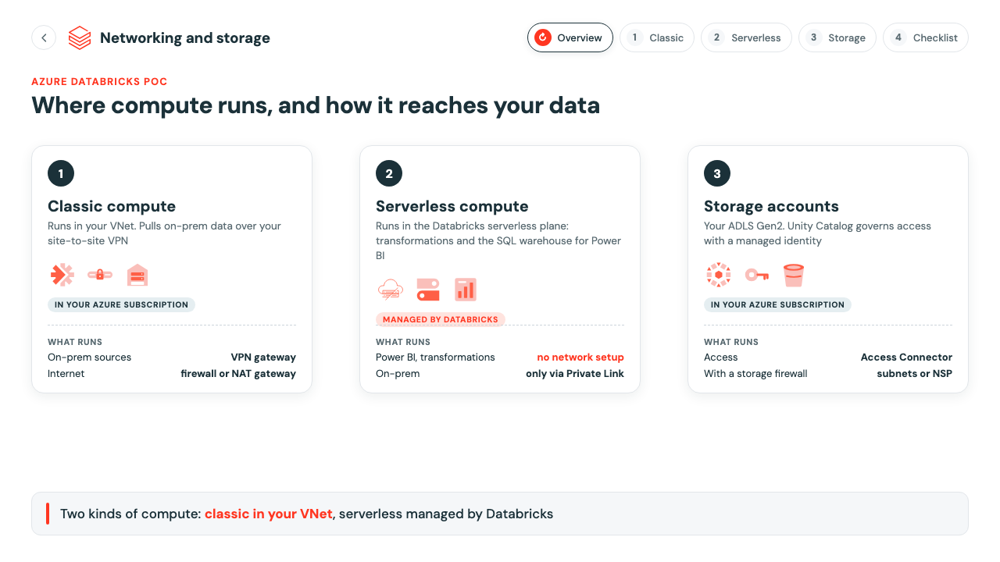
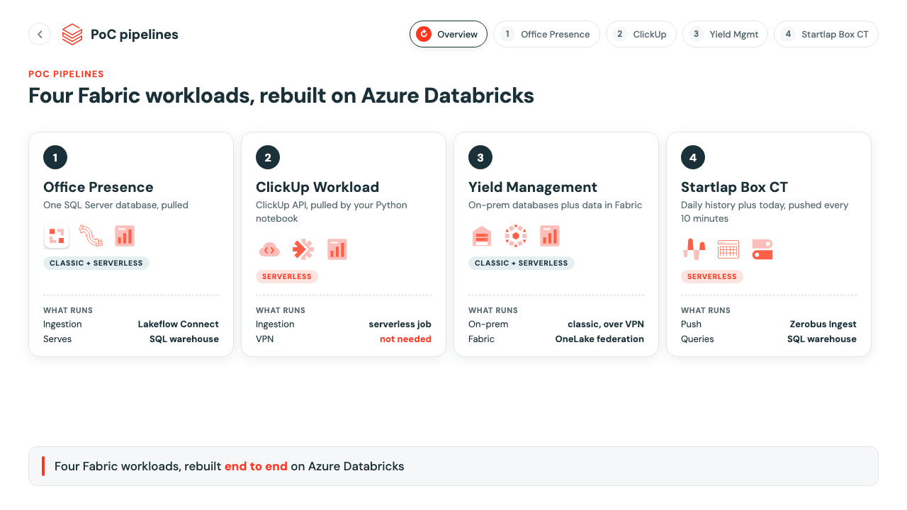

Azure Databricks PoC architecture
Interactive architecture for the networking setup and the four PoC pipelines. Click a tab, or use the arrow keys to step through each part.

Networking and storageSetup
Classic, serverless and storage
How classic and serverless compute reach on-prem sources, the internet and your storage accounts, plus a setup checklist.
Open the architecture →

4 pipelinesPoC
PoC pipelines
High-level design for Office Presence, ClickUp Workload, Yield Management and Startlap Box CT, each ending in Power BI.
Open the architecture →